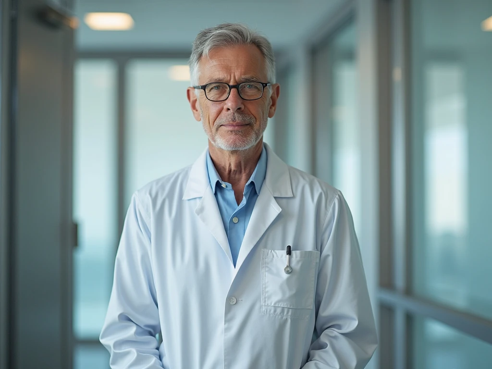

+38(068) 79 72 782
+38(068) 79 72 782Лечение алкоголизма в Черноморске
UmbrellaPlus Безопасная Наркология
Работаем в Одессе, Киеве, Львове, Харькове, Днепре, Запорожье, Черноморске


Бесплатная консультация, работаем круглосуточно 24/7
UmbrellaPlus Безопасная Наркология
Работаем в Одессе, Киеве, Львове, Харькове, Днепре, Запорожье, Черноморске
Алкоголизм — это серьезное хроническое заболевание, которое затрагивает не только физическое здоровье человека, но и его психическое состояние, социальные связи и качество жизни в целом. Признание проблемы и своевременное обращение за профессиональной помощью являются ключевыми шагами на пути к выздоровлению. В Черноморске доступны современные и эффективные методы лечения алкогольной зависимости, предлагающие комплексный подход и поддержку на каждом этапе пути к трезвости. Важно понимать, что выздоровление — это не одномоментное событие, а длительный процесс, требующий терпения, профессиональной поддержки и личной мотивации.
Распознавание признаков алкоголизма является первым и зачастую самым сложным шагом на пути к выздоровлению. Алкогольная зависимость развивается постепенно, и ее симптомы могут быть неочевидными на ранних стадиях. Однако существуют характерные проявления, которые должны насторожить как самого человека, так и его близких.
Одним из ключевых признаков является патологическая зависимость от регулярного распития спиртного.Желание испытать алкогольное опьянение трансформируется в навязчивую потребность, которая начинает доминировать над всеми другими интересами и нуждами.Человек, страдающий алкоголизмом, может находить спрятанное спиртное в любом месте и в любое время, даже ориентируясь по запаху, что свидетельствует о всепоглощающем влечении.
По мере развития зависимости наблюдается увеличение толерантности к алкоголю.Это означает, что для достижения желаемого состояния эйфории и расслабления требуется постоянно увеличивать дозу спиртного. Также часто возникает желание перейти на более крепкие напитки.
Еще одним тревожным сигналом является отсутствие контроля за выпитым.Человек часто употребляет гораздо больше алкоголя, чем изначально планировал, вплоть до полного опьянения или потери сознания. Защитный рвотный рефлекс, который в норме предотвращает чрезмерное отравление организма, может угасать или полностью исчезать.Это крайне опасный симптом, поскольку он позволяет употреблять еще большие, потенциально летальные дозы алкоголя, ускоряя разрушительное воздействие на организм.
Важно отметить, что на ранних стадиях алкоголизма часто отсутствуют значительные проблемы со здоровьем, что может создавать ложное ощущение контроля и откладывать обращение за профессиональной помощью.Однако эти, казалось бы, незначительные изменения являются предвестниками более серьезных и необратимых последствий, подчеркивая критическую важность раннего вмешательства. Понимание этой прогрессии симптомов помогает своевременно распознать проблему и обратиться за помощью, прежде чем болезнь достигнет своих наиболее разрушительных стадий.
Алкоголизм — это прогрессирующее заболевание, которое проходит через несколько стадий, каждая из которых характеризуется усилением зависимости и усугублением последствий для здоровья и социальной жизни. Понимание этих стадий помогает оценить серьезность ситуации и выбрать адекватную стратегию лечения.
Начальная стадия (соответствует 1-й стадии):
Средняя стадия (соответствует 2-й стадии):
Поздняя стадия (соответствует 3-й и 4-й стадиям):
Это наиболее тяжелая и опасная стадия алкоголизма, характеризующаяся глубокими и часто необратимыми изменениями в организме и психике. Ключевым и часто неправильно интерпретируемым признаком на этом этапе является резкое снижение алкогольной толерантности.Человек может сильно опьянеть даже от небольшой дозы спиртного. Это не признак улучшения или восстановления контроля, а, напротив, крайне тревожный индикатор серьезного и необратимого поражения внутренних органов, особенно печени и головного мозга. Организм уже не способен эффективно перерабатывать алкоголь, и даже минимальные дозы вызывают тяжелую интоксикацию. На поздней стадии возникают сильные психозы (например, “белая горячка”) и судороги в нетрезвом состоянии.Происходит полное «выпадение» больного из социальной жизни – потеря друзей, распад семьи, невозможность продолжать трудовую деятельность и, как следствие, потеря работы. Энцефалопатия достигает стадии слабоумия, при этом интеллект и когнитивные функции значительно ниже нормы, резко ухудшаются долговременная и кратковременная память.
Понимание этих стадий и их характерных проявлений критически важно для своевременного обращения за помощью. Чем раньше начато лечение, тем выше шансы на полное и устойчивое выздоровление, предотвращая необратимые разрушения организма и личности.
Эффективное лечение алкоголизма — это сложный, многоэтапный процесс, который требует комплексного подхода и индивидуального плана для каждого пациента. Это не просто отказ от употребления алкоголя, а полноценное восстановление физического и психического здоровья, а также социальной адаптации. Лечение может проводиться в различных форматах: в дневном или круглосуточном стационаре, а также амбулаторно, в зависимости от состояния и потребностей пациента.
Наиболее востребованным и эффективным признается именно комплексный подход, который объединяет детоксикацию, психологическую коррекцию, реабилитацию, кодирование (часто по методу двойного блока – медикаментозно и психически) и последующую послереабилитационную поддержку.Такой подход позволяет решить несколько ключевых задач: очищение организма от токсинов, купирование физиологической зависимости, стабилизация психического состояния и формирование устойчивой установки на здоровый образ жизни.
Первым шагом является первичная диагностика алкоголизма, которая основывается на клинических симптомах и лабораторных данных. Это позволяет объективизировать диагноз и отличить бытовое злоупотребление от патологии.
После диагностики следует купирование алкогольного абстинентного синдрома (так называемой “ломки”), которое является критически важным и зачастую самым опасным этапом. Для этого требуется интенсивная детоксикационная терапия в сочетании с лекарственной поддержкой функций жизненно важных органов и систем. Основная задача — вывести из организма продукты распада алкоголя.В ходе детоксикации проводится симптоматическое лечение, направленное на:
Для достижения быстрой результативности все лекарственные растворы вводятся внутривенно-капельно. Медицинская детоксикация требует постоянного наблюдения за медицинскими и эмоциональными потребностями пациента, а также корректировки терапии в зависимости от симптомов.Этот этап является сложной медицинской процедурой, которая должна проводиться под строгим контролем специалистов, поскольку самостоятельные попытки детоксикации могут привести к опасным для жизни осложнениям, таким как судороги, острый панкреатит или белая горячка.
После стабилизации физического состояния пациента начинается работа по предотвращению рецидивов. Этот этап включает психофармакотерапию и психотерапию.
Одним из популярных методов является кодирование от алкоголизма, целью которого является предотвращение употребления алкоголя на определенный срок. Кодирование может быть достигнуто путем внушения (гипноз) или введения в организм специальных препаратов, которые блокируют действие этанола, лишая человека удовлетворения от выпитого, или вызывают крайне негативную реакцию на алкоголь, формируя к нему отвращение.
Этот этап является ключевым для достижения длительной ремиссии и полноценного возвращения к здоровой жизни. На данном этапе с пациентом работают опытные психологи, помогающие решить проблему психологической зависимости от алкоголя и разобраться во внутренних конфликтах.Цель реабилитации — научить человека самостоятельно решать проблемы в трезвом состоянии.
Реабилитационный процесс часто включает:
Комплексный, многоэтапный подход к лечению алкоголизма является наиболее эффективным, поскольку он учитывает все аспекты зависимости — физический, психологический и социальный. Изолированные методы лечения, такие как только детоксикация или однократное кодирование, недостаточны для достижения устойчивой и долгосрочной ремиссии, поскольку не затрагивают глубинные причины зависимости.
Современная наркология предлагает широкий спектр методов лечения алкоголизма, которые применяются как по отдельности, так и в рамках комплексной терапии. Многообразие подходов обусловлено тем, что алкоголизм является сложным биопсихосоциальным заболеванием, и наиболее эффективное лечение всегда индивидуализировано.
Медикаментозное лечение играет ключевую роль, особенно на начальных этапах. Его цель — купировать болезненные симптомы абстиненции, снизить тягу к спиртному, ускорить выздоровление и закрепить результат.Препараты вводятся в кровоток, обеспечивая быстрое и целенаправленное действие.
Важной частью медикаментозной терапии являются капельницы для детоксикации.
Психотерапия направлена на устранение психологической зависимости и формирование устойчивой мотивации к трезвости. Ее цель — обучить пациентов навыкам преодоления соблазнов, нормализации межличностного общения, построения здоровых внутрисемейных отношений, а также профессиональной и социальной деятельности. Психотерапия способствует выработке осознанных здоровых привычек и негативного отношения к употреблению алкоголя.
Среди психогенных методик особо выделяется гипноз, который позволяет ввести в подсознание пациента внушаемый запрет на употребление алкоголя, устраняя непреодолимую тягу на срок до года.Используются различные техники, включая:
Кодирование от алкоголизма — это общеизвестное название для группы методов, направленных на формирование стойкого отвращения или непереносимости алкоголя. Эти методы могут быть как медикаментозными, так и психотерапевтическими.
Современные подходы к лечению алкоголизма включают также физиотерапевтические процедуры, которые способствуют восстановлению организма, снижению стресса и улучшению общего самочувствия. Это подчеркивает холистический взгляд на выздоровление, при котором восстанавливается не только психическое, но и физическое здоровье.
Широкий спектр современных методов лечения свидетельствует об отсутствии единого универсального решения для всех. Наиболее эффективный подход всегда является комплексным и индивидуализированным, подбираемым после тщательной диагностики. Это означает, что качественная клиника предложит не один или два метода, а проведет детальную оценку состояния пациента для определения оптимальной комбинации терапий, что является признаком передового, ориентированного на пациента подхода.
Капельница от алкоголя является одним из наиболее востребованных и эффективных методов быстрой помощи при острой алкогольной интоксикации и абстинентном синдроме (похмелье или запой). В Черноморске эта услуга широко доступна, в том числе с выездом нарколога на дом.
Основное назначение капельницы от алкоголя — быстрое облегчение состояния человека, страдающего от последствий длительного или чрезмерного употребления алкоголя.Она показана при таких неприятных и опасных симптомах, как:
Наркологическая служба UmbrellaPlus в Черноморске, предлагает услугу капельницы от алкоголя на дому, что имеет ряд значительных преимуществ :
Состав капельницы подбирается наркологом индивидуально, но обычно включает :
Важно понимать, что капельница от алкоголя, хотя и обеспечивает быстрое и значительное облегчение состояния, является лишь первым шагом в комплексном лечении алкоголизма. Она эффективно снимает физическую интоксикацию и абстинентный синдром, но не устраняет психологическую зависимость. Для достижения долгосрочной трезвости необходима дальнейшая психотерапия и реабилитация.
В Черноморске функционируют специализированные наркологические клиники и реабилитационные центры, предлагающие широкий спектр услуг по лечению алкогольной зависимости. Выбор учреждения зависит от индивидуальных потребностей пациента и желаемого уровня комфорта. Важным аспектом, который подчеркивают медицинскую службу UmbrellaPlus она является анонимной в лечении любой стадии алкоголизма, что позволяет избежать постановки на учет и сохранить конфиденциальность.
Стоимость лечения алкоголизма в Черноморске варьируется в зависимости от множества факторов, что делает ценообразование гибким и ориентированным на индивидуальные потребности пациента. Общая цена формируется исходя из:
Средняя цена при лечении алкоголизма в Черноморске начинается от 1699 грн.
| Самые Популярные Услуги | UmbrellaPlus | Черноморск | Цена |
|---|---|
| Вывод из запоя | От 1699 грн |
| Вывод из запоя на дому | От 1999 грн |
| Капельница от алкоголя | От 1699 грн |
| Капельница от алкоголя на дому | От 1999 грн |
Врач-нарколог является центральной фигурой в процессе лечения алкогольной зависимости. Это специалист, обладающий глубокими знаниями в области наркологии, психиатрии и внутренних болезней, который способен провести всестороннюю диагностику, разработать индивидуальный план лечения и обеспечить необходимую поддержку на всех этапах выздоровления.
Роль нарколога начинается с первичной диагностики, где он на основе клинических симптомов и лабораторных данных определяет степень зависимости и наличие сопутствующих заболеваний.Именно нарколог принимает решение о тактике лечения, будь то амбулаторное наблюдение, дневной или круглосуточный стационар.
Нарколог руководит процессом детоксикации, контролируя состояние пациента при купировании абстинентного синдрома. Он подбирает необходимые медикаменты для стабилизации жизненно важных функций организма (сердца, давления, дыхания), выведения токсинов, восстановления электролитного баланса и поддержания работы внутренних органов.Постоянный контроль со стороны нарколога крайне важен для обеспечения безопасности и безболезненности этого этапа.
В Черноморске доступен вызов нарколога на дом.Это удобная и безопасная опция для многих пациентов, поскольку она гарантирует анонимность, психологический комфорт и оперативность получения помощи.Врач прибудет на вызов быстро, проведет оценку состояния и предложит оптимальные меры, включая постановку капельницы от запоя или похмелья.
Помимо медикаментозного лечения, нарколог тесно сотрудничает с психологами и психотерапевтами, формируя комплексный план воздействия на зависимость. Он помогает выявить истинные причины алкоголизма и найти пути для трезвого решения проблем, работая над устранением как физического, так и психологического пристрастия.
Таким образом, квалифицированный нарколог — это не просто специалист, назначающий лекарства, а стратег и координатор всего сложного процесса лечения. Его экспертиза является краеугольным камнем для безопасной и эффективной детоксикации, а также для успешного перехода к последующим фазам психологической реабилитации и социальной адаптации. Обращение к опытному наркологу в Черноморске — это первый и важнейший шаг на пути к устойчивой трезвости.
Вылечить алкоголизм — это сложная, но абсолютно достижимая цель, требующая осознанного решения и профессиональной помощи. Путь к трезвости начинается с признания проблемы и готовности к изменениям.
Путь к трезвости — это личный выбор и серьезная работа, но с поддержкой опытных специалистов в Черноморске он становится реальным.
Алкоголизм — это сложное заболевание, но его можно и нужно лечить. В Черноморске доступны все необходимые ресурсы для эффективной борьбы с этой зависимостью. Современные наркологические клиники предлагают комплексный, многоэтапный подход, включающий детоксикацию, медикаментозную терапию, разнообразные психотерапевтические методики, кодирование и полноценную реабилитацию. Особое внимание уделяется анонимности и индивидуальному подходу к каждому пациенту, что позволяет создать максимально комфортные и эффективные условия для выздоровления.
Не стоит откладывать обращение за помощью. Чем раньше будет начато лечение, тем выше шансы на полное восстановление здоровья, возвращение к полноценной жизни и обретение устойчивой трезвости.
Для получения квалифицированной помощи и консультации по вопросам лечения алкоголизма в Черноморске, пожалуйста, свяжитесь по телефону: 050-021-69-57
Анонимно

"Ну в хлопців просто золоті руки й світла голова, мене капали Олексій та Владислав, буквально за декілька сеансів я наче заново народився, до цього пив більше 3х тижнів, не міг зупинитись, дуже радий що знайшов саме цих спеціалістів, всім рекомендую"
Анонимно
"В течение нескольких лет я злоупотреблял алкоголь, что привело к увольнению с работы и вызвало у меня мысли о суициде. Понимая, что такой образ жизни неприемлем, я обратился за помощью в клинику "Амбрела". Здесь я смог преодолеть свою зависимость от спиртного благодаря заботливым и опытным врачам, а также эффективной системе лечения. Спустя более года я полностью избавился от желания употреблять алкоголь, и теперь моя жизнь вернулась в норму. Я даже не приближаюсь к спиртному! Благодарю врачей клиники "Амбрела" за их помощь и заботу."
Анонимно
"Я обращался за помощью в различные клиники, пытаясь избавиться от своей зависимости от алкоголя, но без особых успехов. Никак не мог справиться с желанием прибегнуть к бутылке, пока друг не посоветовал мне обратиться в центр "Амбрелла". Я записался на прием и был поражен заботливым отношением к пациентам. Уже прошло два года, и теперь я смотрю на алкоголь с абсолютной равнодушием, активно занимаюсь спортом и улучшил отношения в семье. Благодаря центру "Амбрелла" моя жизнь была спасена от алкогольной зависимости!"
Анонимно

"Хочу выразить свою благодарность врачам из центра алкоголизма "Амбрела" за то, что они буквально спасли мою жизнь. В течение последнего года я сильно увлекался питьем, и все это привело к катастрофическим последствиям. Хотя я ходил на терапевтические сеансы, но безрезультатно. Тогда я нашел адрес клиники "Амбрела" в интернете, изучил отзывы и информацию о центре, и записался на прием. Там мне сразу предложили методику лечения, которая помогла не только справиться с физической ломкой, но и психической зависимостью от алкоголя. Не буду распространяться, скажу только одно - после пребывания в этой клинике я стал другим человеком, и навсегда забыл, что такое привкус алкоголя. Больше меня не тянет на это! Я искренне верю, что в центре "Амбрела" трудятся настоящие целители душ!"
Анонимно
"После сложного развода мой сын начал подавлять свою обиду и горе употреблением алкоголя. Он старался скрывать это от меня, но я, как мать, почувствовала, что что-то не так. В конечном итоге, ситуация стала критической. Моя знакомая посоветовала мне обратиться в клинику "Амбрела". Я была приятно удивлена их работой! Они помогли сыну преодолеть очередной период злоупотребления алкоголем, и с тех пор прошел уже более года, и он совсем не пьет."
Анонимно
"Благодаря вашей помощи, моя семья была спасена. Я с трудом уговорила мужа начать лечение, и последний каплей был пьяное ДТП. К счастью, в аварии никто не пострадал, но это был для него сигнал к действию. Он наконец согласился пройти курс лечения на дому, в стационар не хотел ложиться. Лечение было трудным, и были моменты, когда срыв был настолько близок, но благодаря вашему центру Амбрелла мы справились с этим."
Анонимно
"Для меня эта клиника стала настоящим спасением! Долгое время я упорно отказывался от лечения, уверен был, что со мной все в порядке. Но к счастью, семья уговорила меня попробовать. И сегодня я чувствую себя невероятно счастливым, осознавая, что мне абсолютно не нужен алкоголь. Огромное спасибо за помощь и поддержку, которые я получил здесь! Я благодарен вам за новую возможность жить полноценной и счастливой жизнью!"
Анонимно
"Выражаю благодарность ребятам, которые оказали мне помощь и не отвернулись. Уже 10 месяцев я остаюсь чистой. Благодарю за то, что помогли найти новый путь в моей жизни."
Номер телефона:
+380 (97) 369 76 65
+380 (50) 021 69 57
Адрес главного офиса: г. Харьков ул. Сумская 47
Офис вашего города нужно
уточнить
Работаем в: Одессе, Киеве, Львове, Харькове, Днепре,
Запорожье
Telegram: t.me/umbrellaplus
График работы: Круглосуточно